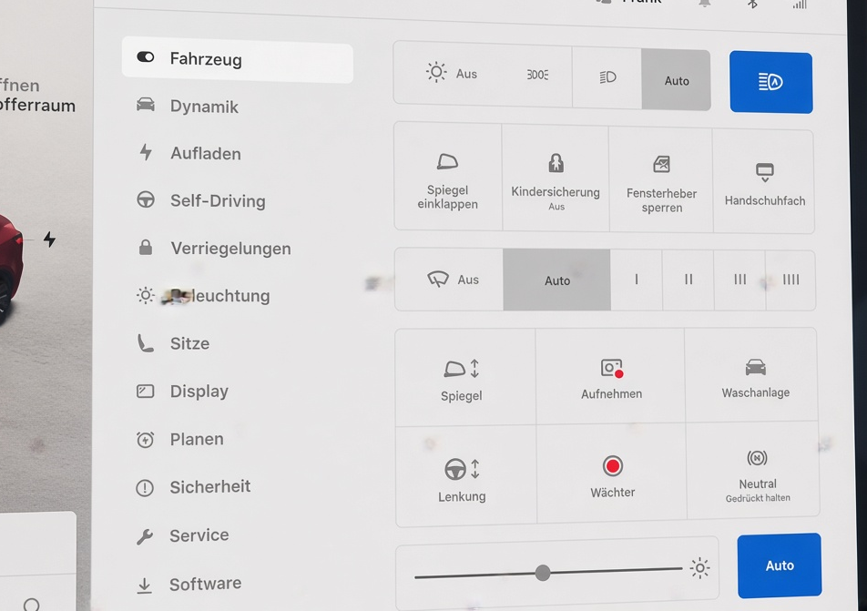
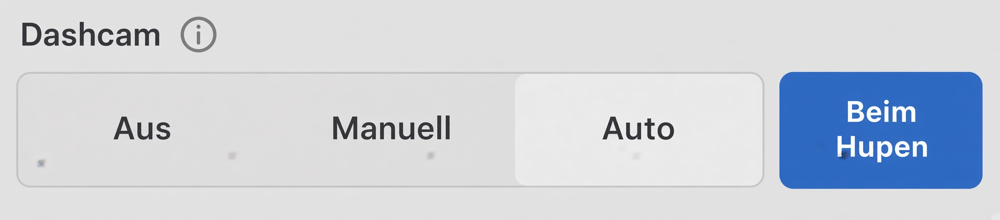
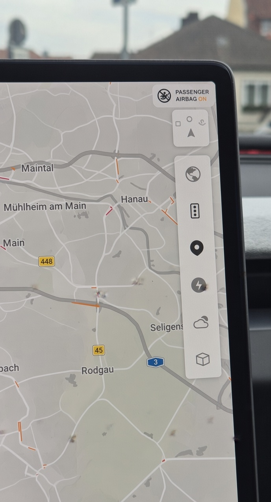

🚗 TFF e.V. Tesla Übergabe- & Einrichtungs-Guide
Herzlichen Glückwunsch zum neuen Tesla! Dieser Guide führt dich Schritt für Schritt durch die optimale Reihenfolge beim Erst-Setup – direkt bei der Übergabe oder später zu Hause beim Einrichten für weitere Fahrer.
WLAN im Delivery Center
SSID: TESLA GUEST | Passwort: abcd123456
📱 Phase 1: Smartphone & Profil-Einstellungen
- 1. Handyschlüssel & Profil-Verknüpfung
- Handyschlüssel einrichten: In der Tesla App auf Handyschlüssel einrichten tippen und die Keycard kurz auf die Mittelkonsole legen.
-
Profil prüfen: Unter Fahrzeug > Verriegelungen kontrollieren, ob dein Name und dein gekoppeltes Smartphone korrekt aufgeführt sind.
-
2. Bluetooth & Medien-Kopplung
- Verbindung herstellen: Den Verbindungsaufbau immer im Bluetooth-Menü des Tesla starten (Fahrzeug > Bluetooth > Gerät hinzufügen), sobald dein Handy aufgetaucht ist.
- Kopplungscode: Den 6-stelligen Code auf dem Smartphone vergleichen und bestätigen.
- Standardgerät festlegen: Das eigene Handy als Priorisiertes Gerät markieren.
Troubleshooting bei Scan-Problemen:
- iPhone: Bluetooth-Einstellungen explizit geöffnet halten.
- Pixel: Smartphone komplett neustarten.
- Fehlgeschlagene Verbindung: Vorgang erneut starten (kann im Center bis zu 5 Versuche benötigen).
⚙️ Phase 2: Fahrzeug- & System-Einstellungen

- 3. Sitz, Spiegel & Lenkrad einstellen
- Fahrersitz, Außenspiegel und Lenkrad anpassen.
Speichern nicht vergessen!
Nach allen Einstellungen auf das kleine Pop-up oben im Display achten und immer auf Speichern tippen, um die Position fest in deinem Profil zu hinterlegen.
- 4. Beleuchtung, Wischer & Waschanlagenmodus
- Licht & Wischer: Scheinwerfer auf
AUTO, Scheibenwischer aufAUTOstellen. - Waschanlagenmodus: Unter Fahrzeug > Service > Waschanlagenmodus testen. Dieser Modus sperrt Ladeklappe, Wischer und Fenster.
Waschanlagenmodus
Hilfreich bei allen Arbeiten am Auto aussen und essenziell für automatische Waschstraßen, die das Auto ziehen.
- 5. Anzeige & Sicherheit
- Anzeige: Kontrast (Hell/Dunkel) anpassen. Reifendruck-Einheit
BARkontrollieren. Energieanzeige nach Wunsch auf%oderkm(= Reichweite) stellen. - Sicherheit: Wächter-Modus (Sentry) und Dashcam
AUTOundBeim Hupenaktivieren.
Joe Modeaktivieren (Fahrzeug > Sicherheit): Signaltöne werden leiser – ideal für Familien.
Wächter-Modus
Der Modus verbraucht beim Parken ca. 2–3 % Akku pro Tag und benötigt einen formatierten USB-Stick im Handschuhfach."
- 6. Software & Trip-Bordcomputer
- Software: Fahrzeugname vergeben und speichern. Kennzeichen und Fahrzeugfarbe im Avatar änderbar.
- Trips: Einen neuen Bordcomputer-Eintrag namens „GESAMT“ anlegen.
Trip Zähler GESAMT
Diesen Zähler niemals löschen! Perfekt für Langzeit-Verbrauchsübersicht, Kosten und Sommer/Winter-Vergleiche.
- 7. Klima & Innenraum
- Luftstrom-Steuerung, Auto-/Manuell-Modus.
- Lenkradheizung sowie Sitzheizung/-lüftung (je nach Modell).
- Cabin Overheat Protection (Überhitzungsschutz): An / Nur Lüfter / Aus – schützt das Interieur bei Hitze (max. ca. 12 Stunden oder bis Low-Power-Mode).
-
Dog Mode / Pet Mode und Camp Mode kurz zeigen (Keep Climate On) – Bildschirm bleibt an, Temperatur sichtbar, App-Überwachung möglich.
-
8. Audio-Einstellungen & Quellen
- Medien-Player öffnen (App-Launcher oder Lautstärke-Leiste unten).
- Quellen verwalten: Fahrzeug > Audio (oder Zahnrad über der Lautstärkeregelung) → Quellen. Unbenutzte Apps/Quellen ausblenden (z. B. Tidal, Amazon Music, TuneIn…), damit es übersichtlich bleibt.
- Equalizer / Ton: Bass, Mitten, Höhen, Subwoofer (bei Premium-Audio zusätzlich Immersive Sound).
- Balance (Mittelpunkt des Sounds verschieben).
-
Optionen: Explicit Content, DJ-Commentary, Mobile Control erlauben.
-
9. Laden & Batterie
- Ladelimit einstellen (Fahrzeug > Laden): Täglich 80 % (bei NMC-Akkus). Bei LFP-Akkus (Standard Range) darf dauerhaft 100 % geladen werden.
- Zeitpläne Geplantes Laden / Abfahrtszeit im Auto oder über die App einstellbar für Vorkonditionierung + Laden fertig zur gewünschten Zeit.
| Ladeoptionen | Anbieter | Typ | Stecker | Start | Abrechnung |
|---|---|---|---|---|---|
| Supercharger | Tesla | DC (175–250 kW) | CCS (integriert) | Plug & Charge | Tesla App (hinterlegtes Zahlungsmittel) |
| Schnelllader / HPC | EnBW, Aral, Ionity u.a. | DC (175–300 kW) | CCS (integriert) | App / Ladekarte | App, Kreditkarte oder Ladekarte |
| Ladesäule (AC) | Diverse | AC (11 kW) | Type 2 (eigenes Kabel) | App / Ladekarte | Anbieter-Ladekarte / App |
| Destination Charger | Tesla | AC (11 kW) | Type 2 (integriert) | Plug & Charge | Über Hotel / Restaurant |
| Wall Connector | Tesla | AC (11 kW) | Type 2 (integriert) | Plug & Charge | Zuhause (eigener Stromzähler) |
| Wallbox | Privat | AC (11 kW) | Type 2 (Kabel/Steckdose) | Direkt / RFID | Zuhause (eigener Stromzähler) |
- 10. Fahren & One-Pedal-Driving
- Der Haltemodus ist bei aktuellen Fahrzeugen fest auf „Halten“ eingestellt und kann nicht mehr geändert werden.
- Das Auto hält vollständig an, sobald man vom Pedal geht (echtes One-Pedal-Driving). Kurz erklären und testen, damit neue Fahrer sich daran gewöhnen.
🏎️ Phase 3: Bedienung, Navigation & Test-Routing
- 11. Lenkradbedienung & Sprachsteuerung
- Mikrofon-Taste: Sprachbefehle testen ("Navigiere nach Hause", "Handschuhfach öffnen", "Klima auf 21 Grad" uvm. inkl. Grok-Assistenz).
- Scheibenwischer-Taste: Kurz drücken = einmal wischen; lang drücken = Scheibenwaschanlage.
- Kameras: Umschaltung auf dem Display (Vorne/Hinten) und Frontkamerareinigung.
-
Fahrassistenten: Lichthupe und Tempomat/Autopilot-Aktivierung, Geschwindigkeitseinstellung verinnerlichen.
-
12. Navigation & Supercharger-Demo
- Zuhause-Adresse: Unter Navigation „Zuhause“ eingeben und speichern (künftig durch kurzes Nach-Unten-Wischen auf der Navigationsleiste direkt aufrufbar).
- Supercharger-Demo: Ein Ziel eingeben (z. B. "Supercharger Würzburg" – keine genaue Adresse nötig).
- Routenplanung: Supercharger auf der Strecke anzeigen lassen und einen Stopp zur Probe hinzufügen (demonstriert Ladeplanung und Akku-Vorkonditionierung).
| Anzeige | Optionen auf der Navi-Anzeige |
|---|---|
 |
(Aufruf durch einmaliges Tippen auf die Karte) 🗺️ Kartenansicht / Satellitenbild 🚗 Verkehrslage 📍 Mein Standort ⚡ Supercharger 🌤️ Wettervorhersage 🧊 3D-Ansicht |
📦 Phase 4: Außenbereich & Zubehör
- 13. Frunk (Vorderer Kofferraum) & Zubehör
- Frunk per App oder Display öffnen.
- Korrektes Schließen: Mit beiden Handflächen links und rechts neben dem Tesla-Emblem sanft herunterdrücken (nicht mittig schlagen!).
-
Inhalt kontrollieren: Warndreieck, Verbandskasten, Warnweste und Ladekabel (Typ 2 / Mobile Connector) prüfen.
-
14. Heckkofferraum & Ladeklappe
- Kofferraum: Öffnen und Stopp-Funktion sowie Einstellung der Öffnungshöhe testen (Taste am Deckel auf gewünschter Höhe gedrückt halten, bis ein Signalton ertönt, und am Display bestätigen).
- Ladeklappe: Öffnung (Tippen auf Klappe oder Kabel-Knopf) und Schließautomatik prüfen.
Ladeklappe schliesst automatisch
Niemals manuell zudrücken!
- 15. Türen & Notentriegelung
- Öffnen der Türen von außen und innen ausprobieren.
- Position und Handhabung der mechanischen Notentriegelungen für den Notfall kennenlernen:
- Vordertüren: Hebel direkt vor den Fensterschaltern nach oben ziehen.
- Fondtüren (bei den meisten neueren Modellen): Matte im Türfach entfernen → Abdeckung abziehen → Seilzug nach vorne ziehen.
Türen nur im Notfall manuell öffnen
Beim manuellen Türöffnen senkt sich das Fenster nicht automatisch ab – Scheibe oder Verkleidung können beschädigt werden. Nur im echten Notfall verwenden.
💡 Allgemeine Hinweise
- Premium-Konnektivität: Ist ab Übergabe 4 Wochen kostenlos inklusive (Live-Verkehrsdaten, Spotify, Satellite-Maps, Video-Streaming). Danach optional für 9,99 € / Monat über die Tesla App buchbar.
- Weitere Fahrer einladen: In der Tesla App unter Fahrzeug verwalten > Fahrer hinzufügen den Einladungslink einfach per Messenger versenden. Profile (Sitz, Spiegel, Audio-Vorlieben) kommen cloud-basiert mit.
- Software-Updates: Regelmäßig prüfen und idealerweise nachts über WLAN installieren.
- Offizielles Handbuch: Im Auto unter App-Launcher → Manual jederzeit verfügbar.
Guide teilen & gemeinsam nutzen 📱
Dir gefällt dieser Guide und du möchtest ihn teilen oder direkt auf dem eigenen Smartphone mitlesen und abhaken?
Einfach mit der Smartphone-Kamera scannen & direkt aufrufen
ℹ️ Projekt-Informationen
| Eigenschaft | Details |
|---|---|
| Version: | v1.0.1 (Stand: Oktober 2026) |
| Herausgeber: | TFF e.V. Supporter Team |
| Lizenz: | MIT License – Frei nutzbar, anpassbar und weiterverwendbar. |
| Quellcode: | Open Source auf GitHub |
Mithelfen & Fehler melden
Hast du Änderungen durch ein neues Tesla-Software-Update entdeckt? Verbesserungsvorschläge nehmen wir gerne als Issue oder Pull Request im Repository entgegen!